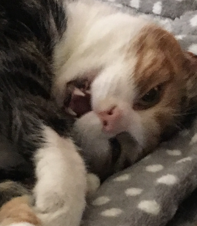
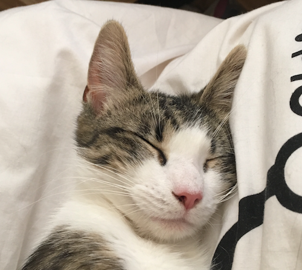
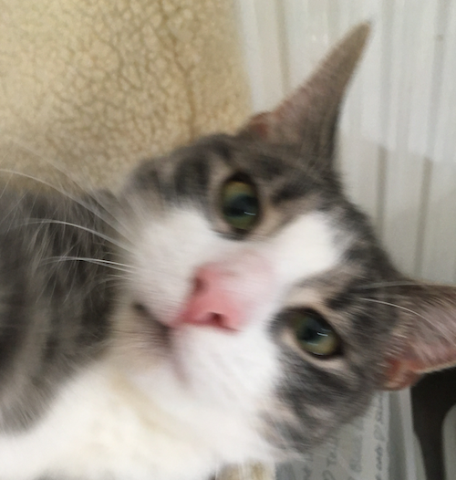
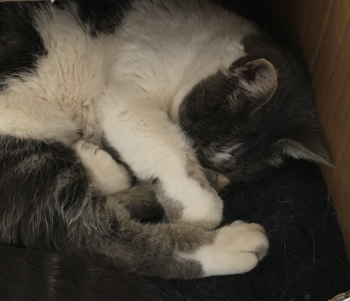
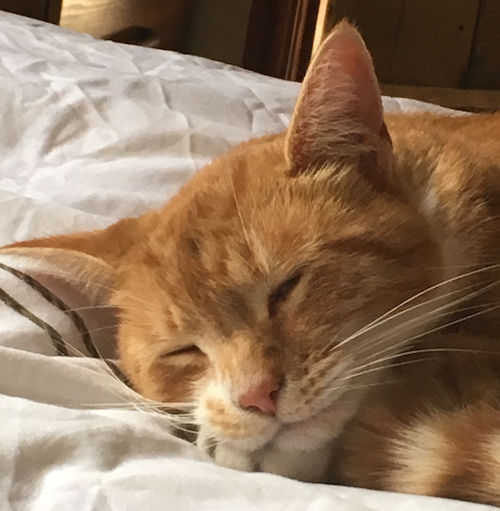
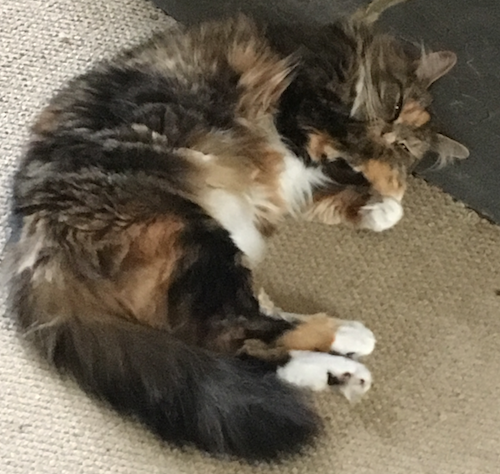

MEOWWORLD OSCP Demo
Demos written in .NET and hosted on OpenShift container platform, showing an ASP.NET/Razor app and webservices.





Select a cat by portrait or enter the name to call the webservice
Output from OSCP Hosted .NET Webservice
Last called (not called).
Webservice response time (not called).
Example Second Output
H2 Placeholder
Updated (date here!).
Example output point
Explanation text.
Leave a Comment: